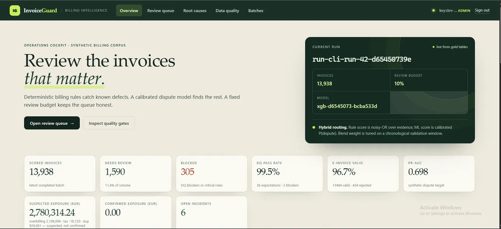

Flagship — full case
InvoiceGuard
Intelligent utility-billing audit & anomaly detection system.

Utilities bill through SAP IS-U and Opencell. Two export schemas, bending tariffs, and errors that compound into retries, VAT drift and bills customers should never receive.
Standardize the heterogeneous billing exports into one canonical model, encode the rules a real audit would apply, and let statistics catch what rules can't.
23 deterministic billing rules across tariff compliance, consumption anomalies and VAT reconciliation — plus 38 Great Expectations-compatible data-quality checks. An XGBoost anomaly engine with hybrid risk scoring, batch and online at parity. FastAPI services on PostgreSQL with SQLAlchemy and Alembic migrations. Factur-X / EN 16931 e-invoice validation. Prometheus metrics, GitHub Actions CI.
- 23billing rules encoded
- 38data-quality checks
- Paritybatch / online scoring
- EN 16931e-invoice validation